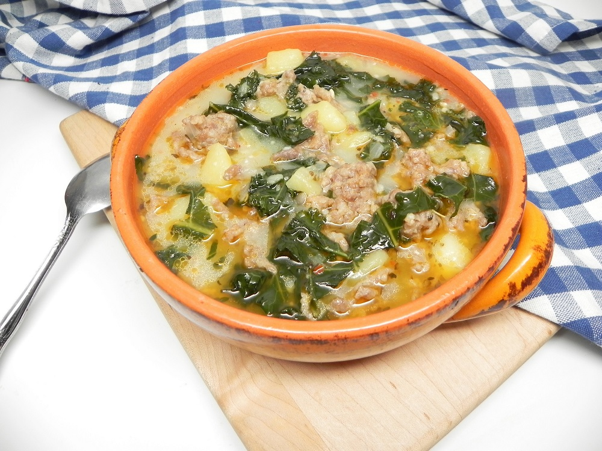

Garnish this Instant Pot® zuppa toscana with Parmesan cheese or bacon bits.
Ingredients:
- 1 tablespoon olive oil
- 1 pound bulk Italian sausage
- 1 large onion, chopped
- 4 cloves garlic, minced
- 1 tablespoon Italian seasoning
- ½ teaspoon salt
- ½ teaspoon ground black pepper
- ¼ teaspoon red pepper flakes
- 4 medium potatoes, cubed
- 4 cups chicken broth
- 4 cups chopped kale
- 1 cup half-and-half
Steps:
- Turn on a multi-functional pressure cooker (such as Instant Pot®) and select Saute function.
- Heat oil in the cooker. Add sausage and cook until no longer pink, about 3 minutes. Stir in onion and garlic; cook until softened and translucent, about 3 minutes. Stir in Italian seasoning, salt, pepper, and red pepper flakes. Add potatoes and chicken broth. Close and lock the lid. Select high pressure and set timer for 5 minutes. Allow 10 to 15 minutes for pressure to build.
- Release pressure using the natural-release method according to manufacturer's instructions, 10 to 40 minutes. Unlock and remove the lid.
- Stir kale into the cooker. Select Saute function. Cook, uncovered, for 2 minutes. Stir in half-and-half. Turn off the cooker and serve.